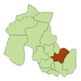
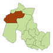

.png )
.png )
.png )
.png )
.png)
.png )
.png )
.png )
.png )
.png )
.png )
.png )
.png )
.png )

"Entre las varias versiones, es porque al estar ubicado entre cerros su conformación era como una Tacita, y una Tacita de Plata por su belleza y por su limpieza en ese tiempo".
La provincia de Jujuy se encuentra en el extremo norte de Argentina.
Limita al sur y El Este con la provincia de Salta, y con los Países Bolivia Al Norte y al Oeste Chile.La superficie es de aliviar montañoso, ocupada mayormente por la puna, Que Es Un altiplano de 3.800 m de altura.
de capital Su San Salvador de Jujuy, Llamada popularmente "Tacita del Plata", SE ENCUENTRA UBICADA EN UN fértil valle, en la confluencia de los Ríos Grande y Xibi Xibi, Rodeada de Montañas Que, Hacia el oeste en invierno, Suelen Estar cubiertas de nieve.
Puna
Quebrada
Valles Orientales
Valles Centrales
| Mapa | Departamento | Localidad | ||
|---|---|---|---|---|
|
Cochinoca | Abra Pampa | ||
|
Doctor Manuel Belgrano | San Salvador de Jujuy | ||
| |
El Carmen | El Carmen | ||
| |
Humahuaca | Humahuaca | ||
|  | Ledesma | Libertador General San Martin | ||
| |
Palpalá | Palpalá | ||
|  | Rinconada | Rinconada | ||
| |
San Antonio | San Antonio | ||
| |
San Pedro | San Pedro de Jujuy | ||
| |
Santa Bárbara | Santa Clara | ||
| |
Santa Catalina | Santa Catalina | ||
| |
Susques | Susques | ||
| |
Tilcara | Tilcara | ||
| |
Tumbaya | Tumbaya | ||
| |
Valle Grande | Valle Grande | ||
| |
Yavi | La Quiaca | ||
Purmamarca (purma = desierto, marca = ciudad, literalmente significa: “ciudad del desierto”), también se traduce: tierra inculta o tierra virgen, no tocada por manos humanas.Purmamarca, es ciudad de Argentina, que está situada en Tumbaya, en la provincia de Jujuy, con muchos atractivos turísticos naturales, que atrae cada día más visitantes. Entre los sitios más visitados, se encuentra el Cerro de los 7 Colores. Ubicado en un pueblo indígena a 64 kilómetros de la población de San Salvador de Jujuy; se alza a espaldas de la ciudad de Purmamarca.
Es una formación natural, producto de una formación geológica a lo largo de millones de años, compuesto por sedimentos marinos, fluviales y lacustres, sus capas de diferentes tonos y colores reflejan una magnifica tonalidad, divididos por una línea quebradiza, creando una de las mejores atracciones naturales de Argentina, y un gran deleite visual para los espectadores. Es singular en la región y en el país.

Las Salinas Grandes ofrecen un paisaje único en La Puna argentina. Una inmensa planicie blanca que llega al horizonte. Las Salinas Grandes con sus asombrosos paisajes se convirtió en uno de los destinos imperdibles de la provincia. Para llegar a las Salinas Grandes se debe atravesar la impresionante Cuesta de Lipán con sus hermosos paisajes.
¿Como llegar a las Salinas Grandes? Las Salinas Grandes se encuentran sobre la Ruta Nacional 52, la misma que llega hasta el Paso de Jama (Paso Internacional Argentina-Chile). El viaje comienza desde la localidad de Purmamarca y antes de llegar a las salinas se debe atravesar la Cuesta de Lipán, con una altura máxima de 4.170 metros. La ruta es asfaltada y se encuentra en muy buen estado.
No hay Transporte público una de las Salinas Grandes, Pero Diferentes Agencias de Viaje Organizan excursiones de cómo llegar Salinas Grandes.
Distancias desde Salinas Grandes: Purmamarca 66 kilometros, 91 kilometros Tilcara, Humahuaca 134 kilometros, San Salvador de Jujuy 131 kilometros, 248 kilometros de Salta.

La serranía de Hornocal es una sierra ubicada a 25 kilómetros de la ciudad de Humahuaca en la provincia de Jujuy de la Argentina. Es parte de la formación calcárea llamada Yacoraite que se extiende desde la provincia de Salta, atravesando la Quebrada de Humahuaca y luego el Altiplano boliviano hasta Perú.
TIENE UNA altura de 4761 metros sobre el Nivel del mar.Su forma Característica ES RESULTADO DE UN efecto de corte, lo cual sea Consiste en la erosión en ángulo de la ONU Conjunto de Capas paralelas Que producto de la ONU efecto visual similar al de plegamientos ( erróneamente asociado a esta serranía con frecuencia).

El Parque Nacional Calilegua se ubica en las Sierras de Calilegua, que luego dieron nombre a este Parque Nacional, enclavado la jurisdicción del mismo, en el sureste de la Provincia de Jujuy. Fue creado el 19 de julio de 1979 por Decreto Nacional Nº 1733. Su superficie alcanza las 76.306 hectáreas que pertenecen a la ecorregión de la Selva de las Yungas. La región en la que se encuentra el Parque fue objeto de la ocupación humana desde tiempos antiguos. Así por ejemplo, pueden encontrarse referencias - cerámicas y otros objetos - asociados a los pueblos que conformaron la llamada Tradición San Francisco.
Luego de la dominación incaica y posteriormente la conquista española sucedieron distintos acontecimientos que fueron configurando la situación actual de esta región, en la que conviven simultáneamente manifestaciones de las culturas Kolla y Guaraní. La existencia del Parque está asociada a la Empresa Ledesma SA, cuyos directivos cedieron a la provincia de Jujuy, tierras para la creación de un parque nacional. En 1979, Ello se concreto con la promulgación del Decreto Nacional Nº 1733.
El sustantivo “Calilegua” tiene origen y SIGNIFICADO inciertos, AUNQUE ALGUNOS Autores lo asocian a la lengua aymara y lo traducen Como “Mirador de Piedra”.